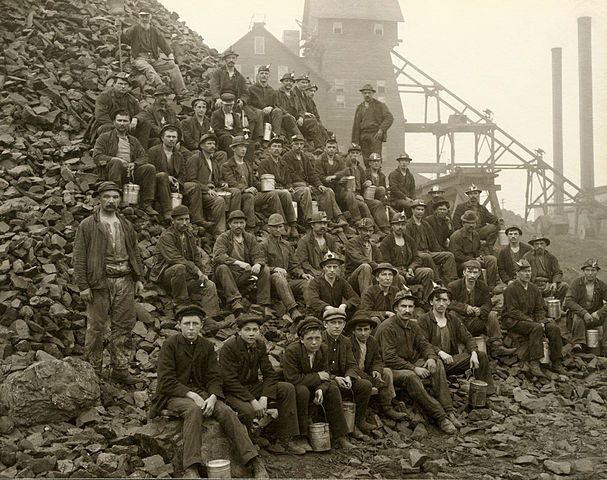

Alabama Mine and the 3353 named Mines
In your back yard??
Mining comes with many stigmas attached to it, none of them are ever considered good. Pollution, damage to the environment, greed, and the list goes on. No one wants a mine in their backyard. Mining has a bad reputation. Maybe it is time for a change. The National/International Coal Energy (NICE) Council believes it is time for a change.
Mining of raw materials has been occurring by mankind for thousands of years. These resources have advanced civilization from the caveman through the industrial age and will continue into the future. Although mining in the short term may seem messy or ugly, laws are in place to return the land to a beautiful state. Although the resources that are being mined may change, mining is here to stay. When done properly over the long term, one would not realize a mine is in their backyard.
The Alabama Mine is located North East of Sacramento, California. It is not an isolated mine but one of more than 3000 mines located within the state. Although not all of these mines are active, they are still there below the surface and possibly in your backyard.
Mine features were extracted from the Domestic and Antarctic Names (State and Topical Gazetteer) published by the United States Board on Geographic Names. (geonames.usgs.gov) Data accessed September, 2019. Contours were extracted from a USGS NED 1/3 arc-second raster digital elevation model. This data can be accessed at the USGS 3D Elevation Program (usgs.gov)
Tools used in this project
- Data is shown on a Mapbox web map.
- GDAL and QGIS 3.8.2 on a Windows 10 computer to convert raster elevation units and create contours.
Project assets
Sources?
- Photos?

From mineral extraction

To land restoration
- See my projects on GitHub: Glen Rauner
- Email me: GRAUNER